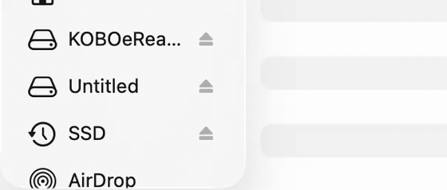

Install Cobalt directly from your browser
Writes Cobalt and NickelMenu to a Kobo plugged into this computer. No terminal, nothing uploaded.
Other ways to install
Terminal One command
Plug the reader in, open Terminal, paste this:
curl -fsSL https://bandarlabs.github.io/Cobalt/install.sh | sh
Installs Cobalt and NickelMenu, adds the menu entry, ejects the drive. Keeps what is already on the reader.
Any browser Copy one file
- Download the Cobalt file
- Plug the Kobo in and tap Connect. It shows up as a drive called
KOBOeReader. - Copy the file into the
.kobofolder, named exactlyKoboRoot.tgz. That folder is hidden: on a Mac press ⌘⇧. in Finder, on Windows turn on Hidden items in the View tab. - Eject the drive, unplug, then hold the power button until the reader restarts.
To add Cobalt to the reader's menu, also make a file called cobalt inside .adds/nm containing:
From source Build it yourself
Needs Rust. Builds the same thing the other two download.
git clone https://github.com/BandarLabs/Cobalt.git cd Cobalt rustup target add armv7-unknown-linux-musleabihf cargo run -p kobo-cli -- setup
Supported readers and the firmware each was tested at are in the device support matrix. The full walkthrough, including how to recover a reader, is in docs/INSTALL.md.
-
Connect your Kobo via USB
Plug the Kobo in. It asks on its own screen whether to connect: tap Connect. Until you do, it only charges and no drive appears. Then choose
KOBOeReaderhere.Your browser will ask permission to edit files on the drive. Only
.koboand.addsare written. -
Download Cobalt
Downloads Cobalt and checks it against the checksum published with it. If the file that arrives is not the one that was published, it is thrown away instead of written to your reader.
-
Choose applications optional
These go on at the same time, so they are ready when the reader starts. You can skip this and add them later from the Store on the reader.
Loading the catalogue…
-
Write it to your Kobo
Writes Cobalt to the reader and adds it to the reader's menu. Menu entries you or other mods added are left alone.
-
Eject and restart your Kobo
Eject the drive before unplugging. A page cannot do this for you, and it is not a formality: your computer may still be holding part of the file in memory, and ejecting is what finishes writing it. Unplugging first can leave the reader with half an update.

On a Mac: click the eject symbol beside KOBOeReaderin the Finder sidebar. On Windows, use Safely Remove Hardware in the taskbar.Then hold the power button until the reader restarts. It shows an update screen while the firmware unpacks Cobalt, and returns to the home screen.
Leave the home screen alone for about a minute afterwards. NickelMenu uses that time as a failsafe and switches itself off if a start is interrupted. Then open the menu in the bottom-right corner and choose Cobalt.